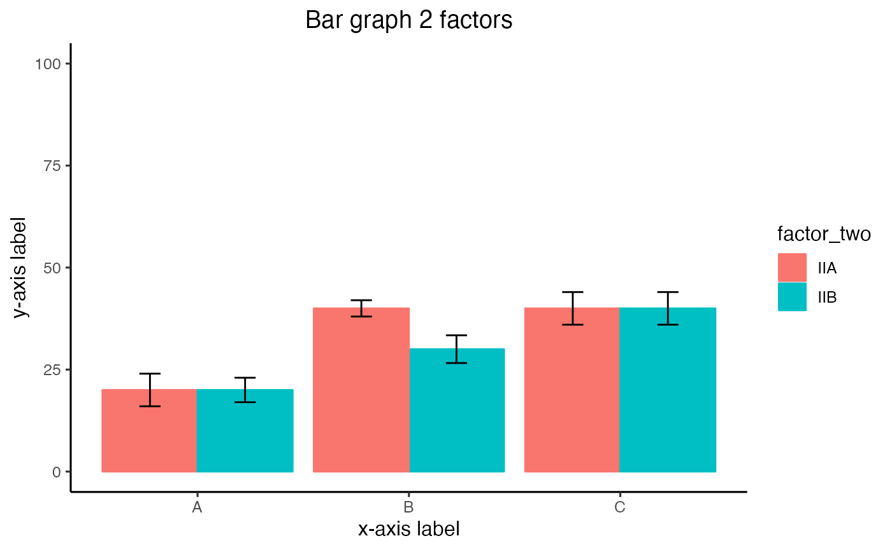
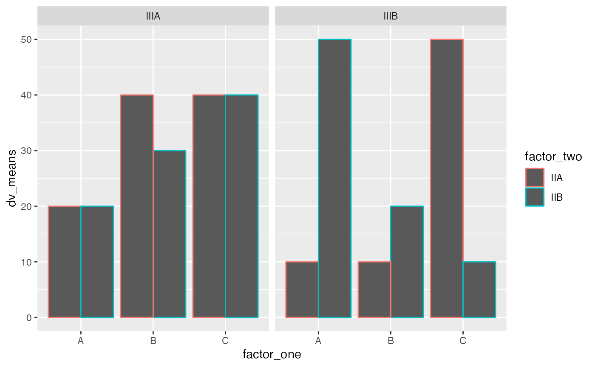
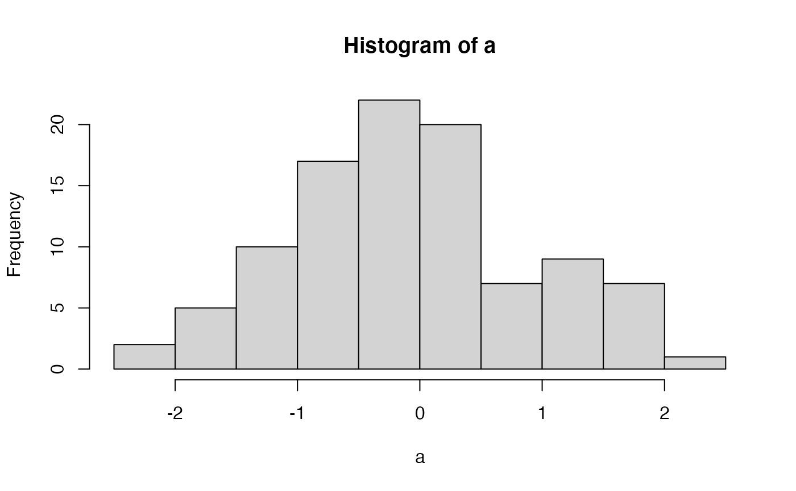

Coding Reference
reference_code.RmdThis page contains minimal explanations and examples for common coding patterns in base R and tidyverse. Students can make content requests and contribute to this reference page, just leave a message on the github issues for this course repository.
Base R
Base R refers to intrinsics capabilities of R that come with a fresh installation of R. No additional libraries are needed.
Variables
a is the variable name. <- is the assignment operator. In this example, 1 is being assigned into the object named a.
a <- 1
Variables have classes that describe their contents.
x <- 1 class(x) #> [1] "numeric" y <- "1" class(y) #> [1] "character" z <- TRUE class(z) #> [1] "logical"
Classes allow and disallow some commands. For example, you can’t add a numeric to a character:
x+y #> Error in x + y: non-numeric argument to binary operator
Classes can be converted:
y <- as.numeric(y) x+y #> [1] 2
Vectors
Vectors are 1-dimensional objects that have a name, and can hold multiple elements of the same class. The number of elements in the vector is the vector length. Manipulating vectors involves creating them, and storing, retrieving, and changing elements inside of the vector.
Vector Creation
There are multiple ways to create a vector
a <- c() # create a NULL vector a #> NULL a <- 1:5 # assign a sequence to a name a #> [1] 1 2 3 4 5 a <- c(1,2,3,4,5) # assign a vector made with combine c() a #> [1] 1 2 3 4 5 #pre-assign an empty vector a <- vector(mode = "numeric", length=10) a #> [1] 0 0 0 0 0 0 0 0 0 0 a <- vector(mode = "integer", length=10) a #> [1] 0 0 0 0 0 0 0 0 0 0 a <- vector(mode = "logical", length=10) a #> [1] FALSE FALSE FALSE FALSE FALSE FALSE FALSE FALSE FALSE FALSE a <- vector(mode = "character", length=10) a #> [1] "" "" "" "" "" "" "" "" "" ""
length() returns the number of elements in the vector
Vector Combination
It is possible to combine existing vectors together to make a new vector using c().
x <- 1:5 y <- 6:10 x #> [1] 1 2 3 4 5 y #> [1] 6 7 8 9 10 z <- c(x,y) z #> [1] 1 2 3 4 5 6 7 8 9 10
However, if you attempt to combine vectors of different classes, R will throw an error, or it will coerce (convert) one of the vectors into the class of the other.
Vector Indexing
Vector indexing is the the process of isolating specific positions or elements of a vector. Vector indexing uses the [] notation.
The general syntax is vector_name[positions], where vector_name is the name of your vector, and positions is a vector of positions to index.
a <- c(23,34,45,56,67,78,89) a[1] # returns the element in position 1 #> [1] 23 a[1:3] # returns elements in positions 1 to 3 #> [1] 23 34 45 a[c(4,5,6)] #> [1] 56 67 78 a[c(1,1,1)] #> [1] 23 23 23
Logical vectors can indicate positions. In this case, elements in TRUE positions will be returned
Vector indexing and assignment
Vector indexing can also be used to assign new elements to the indexed positions.
a <- c(45,56,78) a #> [1] 45 56 78 a[3] <- 100 a #> [1] 45 56 100 a[1:3] <- "Hello" a #> [1] "Hello" "Hello" "Hello"
Logical indexing
Vectors can be indexing using logical comparisons (see section on logic for further explanation and examples of logical comparisons).
a <- c(1,3,2,4,3,4) a == 4 # create logical vector of positions containing 4 #> [1] FALSE FALSE FALSE TRUE FALSE TRUE # inserting the above into a[] finds the elements equal to 4 a[a == 4] # elements equal to 4 #> [1] 4 4 a[a < 4] # elements less than 4 #> [1] 1 3 2 3 a[a <= 4] # elements less than or equal to 4 #> [1] 1 3 2 4 3 4 a[a != 1] # elements not equal to 1 #> [1] 3 2 4 3 4
Data.frame
Data.frames are 2-d storage objects, like a table (or excel sheet), they have columns and rows.
a <- data.frame() # make an empty data.frame a #> data frame with 0 columns and 0 rows class(a) #> [1] "data.frame"
Data.frame creation
A common method to create a data.frame involves adding existing vectors together. Data.frames are often also created when loading in data files that are 2-d tables. See also the section on using dplyr to manipulate data in dataframes. Data.frames are also similar to data.tables, and tibbles, and can usually be interchanged.
x <- c(1,2,3) y <- c("a","b","c") z <- c(TRUE, TRUE,TRUE) a <- data.frame(x,y,z) a #> x y z #> 1 1 a TRUE #> 2 2 b TRUE #> 3 3 c TRUE
dim() returns the number of rows and columns in the data.frame
dim(a) #> [1] 3 3
Indexing by column name
Each column in a data.frame has a name, and can be accessed using the $ syntax:
Indexing with [rows,columns]
Data.frames have rows and columns, and can be indexed using [rows,columns] notation, where rows is a vector of row numbers, and columns is a vector of column numbers
a #> new_x Why Zee #> 1 1 a TRUE #> 2 2 b TRUE #> 3 3 c TRUE a[1,] # row 1 #> new_x Why Zee #> 1 1 a TRUE a[,1] # column 1 #> [1] 1 2 3 a[1:2,] # rows 1 to 2 #> new_x Why Zee #> 1 1 a TRUE #> 2 2 b TRUE a[,1:2] # columns 1 to 2 #> new_x Why #> 1 1 a #> 2 2 b #> 3 3 c a[1:2,1:2] #rows 1 to 2 and columns 1 to 2 #> new_x Why #> 1 1 a #> 2 2 b a[1:2,'new_x'] # Column names can be used #> [1] 1 2
row and column binding
It is possible to add more rows using rbind(), and add more columns using cbind().
# row bind a copy of a to itself a #> new_x Why Zee #> 1 1 a TRUE #> 2 2 b TRUE #> 3 3 c TRUE a <- rbind(a,a) dim(a) #> [1] 6 3 # create a new vector, add it as a new column my_new <- c(1,4,3,2,4,5) a <- cbind(a,my_new) a #> new_x Why Zee my_new #> 1 1 a TRUE 1 #> 2 2 b TRUE 4 #> 3 3 c TRUE 3 #> 4 1 a TRUE 2 #> 5 2 b TRUE 4 #> 6 3 c TRUE 5
Indexing and assignment
The elements in a data.frame can be re-assigned by your_dataframe[row:position] <- new stuff. It is generally necessary that any new elements have the same class as the original elements
a #> new_x Why Zee my_new #> 1 1 a TRUE 1 #> 2 2 b TRUE 4 #> 3 3 c TRUE 3 #> 4 1 a TRUE 2 #> 5 2 b TRUE 4 #> 6 3 c TRUE 5 a[,1] <- 5 #assign column 1 all 5s a$Why <- c("new","words","are","going","in","here") a #> new_x Why Zee my_new #> 1 5 new TRUE 1 #> 2 5 words TRUE 4 #> 3 5 are TRUE 3 #> 4 5 going TRUE 2 #> 5 5 in TRUE 4 #> 6 5 here TRUE 5 a[6,3] <- FALSE # row 6, column 3 a #> new_x Why Zee my_new #> 1 5 new TRUE 1 #> 2 5 words TRUE 4 #> 3 5 are TRUE 3 #> 4 5 going TRUE 2 #> 5 5 in TRUE 4 #> 6 5 here FALSE 5
Lists
Lists are objects that can store more arbitrary elements of any class, including vectors, dataframes, and even more lists. Lists are commonly used to store results from a model, especially when the model returns many different kinds of results in different formats.
Here we create a list with three elements, a scalar, a vector, and a dataframe.
x <- 1 y <- c(1,2,3,4,5) z <- data.frame(a= 1:5, b=1:5, c=1:5) my_list <- list(x, y, z) my_list #> [[1]] #> [1] 1 #> #> [[2]] #> [1] 1 2 3 4 5 #> #> [[3]] #> a b c #> 1 1 1 1 #> 2 2 2 2 #> 3 3 3 3 #> 4 4 4 4 #> 5 5 5 5
List indexing
Access elements in the list using [[]]
my_list[[1]] #> [1] 1 my_list[[2]] #> [1] 1 2 3 4 5 my_list[[3]] #> a b c #> 1 1 1 1 #> 2 2 2 2 #> 3 3 3 3 #> 4 4 4 4 #> 5 5 5 5
Named elements
Elements in a list can be given names, and indexed by name:
x <- 1 y <- c(1,2,3,4,5) z <- data.frame(a= 1:5, b=1:5, c=1:5) my_list <- list(ex = x, why = y,zee= z) my_list #> $ex #> [1] 1 #> #> $why #> [1] 1 2 3 4 5 #> #> $zee #> a b c #> 1 1 1 1 #> 2 2 2 2 #> 3 3 3 3 #> 4 4 4 4 #> 5 5 5 5 my_list$ex #> [1] 1 my_list$why #> [1] 1 2 3 4 5 my_list$zee #> a b c #> 1 1 1 1 #> 2 2 2 2 #> 3 3 3 3 #> 4 4 4 4 #> 5 5 5 5 my_list[["ex"]] #> [1] 1 my_list[["why"]] #> [1] 1 2 3 4 5 my_list[["zee"]] #> a b c #> 1 1 1 1 #> 2 2 2 2 #> 3 3 3 3 #> 4 4 4 4 #> 5 5 5 5
Add/Remove elements in lists
It is possible to assign new names elements to a list, e.g.:
my_list[["new_thing"]] <- 12345 my_list #> $ex #> [1] 1 #> #> $why #> [1] 1 2 3 4 5 #> #> $zee #> a b c #> 1 1 1 1 #> 2 2 2 2 #> 3 3 3 3 #> 4 4 4 4 #> 5 5 5 5 #> #> $new_thing #> [1] 12345 #set an element to NULL removes it my_list[["zee"]] <- NULL my_list #> $ex #> [1] 1 #> #> $why #> [1] 1 2 3 4 5 #> #> $new_thing #> [1] 12345
Logic
Logic statements are used to compare two things, or two sets of things. The output of comparison is a TRUE or FALSE statment. If many things are being compared at once, the output could be many TRUE or FALSE statements for each comparison
Greater than/ less than
1 > 1 # is 1 greater than 1? #> [1] FALSE 5 > 1 # is 5 greater than 1? #> [1] TRUE 3 < 2 # is 3 less than 2? #> [1] FALSE 3 < 1 # is 3 less than 1? #> [1] FALSE c(1,2,3) > c(2,1,3) # ask the question element by element #> [1] FALSE TRUE FALSE c(1,2,3) < c(2,1,3) #> [1] TRUE FALSE FALSE 2 > c(1,2,3) # is greater than each of the numbers #> [1] TRUE FALSE FALSE
>= <=
Is something greater than or equal to something else
1 >= 1 # is 1 greater than 1? #> [1] TRUE 5 >= 1 # is 5 greater than 1? #> [1] TRUE 3 <= 2 # is 3 less than 2? #> [1] FALSE 3 <= 1 # is 3 less than 1? #> [1] FALSE c(1,2,3) >= c(2,1,3) # ask the question element by element #> [1] FALSE TRUE TRUE c(1,2,3) <= c(2,1,3) #> [1] TRUE FALSE TRUE 2 >= c(1,2,3) # is greater than each of the numbers #> [1] TRUE TRUE FALSE
AND
The ampersand & is used for AND, which allows use to evaluate whether two or more properties are all TRUE.
# is 16 divisible by 4 AND 8 16%%4 == 0 & 16%%8 ==0 #> [1] TRUE # is 16 divisible by 4 AND 3 16%%4 == 0 & 16%%3 ==0 #> [1] FALSE # is 16 divisible by 8 and 4 and 2 16%%4 == 0 & 16%%8 ==0 & 16%%2 ==0 #> [1] TRUE
OR
The | is used for OR, which allows use to evaluate at least one of the properties is TRUE.
# is 16 divisible by 4 OR 8 16%%4 == 0 | 16%%8 ==0 #> [1] TRUE # is 16 divisible by 4 OR 3 # it is divisible by 4, so the answer is TRUE # because at least one of the comparisons is TRUE 16%%4 == 0 | 16%%3 ==0 #> [1] TRUE
IF ELSE
A roller-coaster operator checks if people are taller than a line to see if they can ride the coaster. This is an IF ELSE control structure. IF the person is taller than the line, then they can go on the ride; ELSE (otherwise) the person can not go on the ride.
In other words, IF the situation is X, then do something; ELSE (if the situation is not X), then do something different.
IF and ELSE statements let us specify the conditions when specific actions are taken. Generally, IF and ELSE statements are used inside loops (for, or while, or repeat loops), because at each step or iteration of the loop, we want to check something, and then do something.
Consider this:
a <- 1 # define a to be a 1 if(a==1){ print(a) # this is what happens if a==1 } else { print("A is not 1") # this is what happens if a is not 1 } #> [1] 1 a <- 2 # define a to be a 1 if(a==1){ print(a) # this is what happens if a==1 } else { print("A is not 1") # this is what happens if a is not 1 } #> [1] "A is not 1"
Normally we find IF and ELSE in a loop like this:
a <- c(1,0,1,0,0,0,1) # make a variable contain 1s and 0s # write a loop to check each element in the variable # and do different things depending on the element for(i in a){ if(i == 1){ print("I'm a 1") # what to do when i is 1 } else { print("I'm not a 1") # what to do when i is not 1 } } #> [1] "I'm a 1" #> [1] "I'm not a 1" #> [1] "I'm a 1" #> [1] "I'm not a 1" #> [1] "I'm not a 1" #> [1] "I'm not a 1" #> [1] "I'm a 1"
We can have multiple conditions in our if statements. See the next section on loops for more info about using loops.
a <- c(1,2,3,1,2,0,1) # make a variable contain 1s and 0s # write a loop to check each element in the variable # and do different things depending on the element for(i in a){ if(i == 1){ print("I'm a 1") # what to do when i is 1 } else if (i==2){ print("I'm a 2") # what to do when i is 2 } else if (i==3){ print("I'm a 3") # what to do when i is 3 } else { print("I'm not any of the above") #what to do when none are true } } #> [1] "I'm a 1" #> [1] "I'm a 2" #> [1] "I'm a 3" #> [1] "I'm a 1" #> [1] "I'm a 2" #> [1] "I'm not any of the above" #> [1] "I'm a 1"
Loops
Check R help for on Control Flow ?Control.
for(){} for(loop control){do something each iteration}
for(iterator in vector){ #do something }
Loop control is defined in between the parentheses. The name of the iterator is placed on the left of in(can be assigned any name you want, does not need to be declared in advance). During the execution of the loop, the iterator takes on the values inside the vector which is placed on the right side of in. Specifically, the following is happening.
Loop steps: 1. iterator <- vector[1] 2. iterator <- vector[2] 3. iterator <- vector[3] 4. etc.
The loop will automatically stop once it reaches the last item in the vector. The loop can be stopped before that using the break command.
# Make a loop do something 5 times # i is the iterator # 1:5 creates a vector with 5 numbers in it, 1, 2, 3, 4, 5 # the loop will run 5 times, because there are five things to assign to i for(i in 1:5){ print("hello") } #> [1] "hello" #> [1] "hello" #> [1] "hello" #> [1] "hello" #> [1] "hello"
# show the value of i each step of the loop for(i in 1:5){ print(i) } #> [1] 1 #> [1] 2 #> [1] 3 #> [1] 4 #> [1] 5
# define the vector to loop over in advance x <- 1:5 for(i in x){ print(i) } #> [1] 1 #> [1] 2 #> [1] 3 #> [1] 4 #> [1] 5
# Reminder that i becomes the next value in the vector # your vector can have any order my_sequence <- c(1,5,2,3,4) for(i in my_sequence){ print(i) } #> [1] 1 #> [1] 5 #> [1] 2 #> [1] 3 #> [1] 4
# index vector does not need to be numbers my_things <- c("A","B","C","D") for(i in my_things){ print(i) } #> [1] "A" #> [1] "B" #> [1] "C" #> [1] "D"
Breaking a loop
break stops a loop. Used with logical statements to define the conditions necessary to cause the break.
for(i in 1:10){ if(i <5){ print(i) } else{ break } } #> [1] 1 #> [1] 2 #> [1] 3 #> [1] 4
While loops
While loops run until a logical condition is met. Here there is no iterator, just a logic statement that needs to be met.
This one prints i while i is less than 6. As soon as i becomes “not less than 6”, then the loop stops. Critically, inside the loop, the value of i increases each iteration.
i <- 1 # create an variable while (i < 6) { print(i) i = i+1 #add one eachs step of the loop } #> [1] 1 #> [1] 2 #> [1] 3 #> [1] 4 #> [1] 5
Repeat loops
Similar to while, but let’s do things until a condition is met.
i<-0 repeat{ i<-i+1 print(i) if(i==5){ break } } #> [1] 1 #> [1] 2 #> [1] 3 #> [1] 4 #> [1] 5
Examples
Braces are not needed on one line
for(i in 1:5) print(i) #> [1] 1 #> [1] 2 #> [1] 3 #> [1] 4 #> [1] 5
Using the value of the iterator to assign in values systematically to another variable.
# put 1 into the first five positions of x x <- c() # create empty vector for(i in 1:5){ x[i] <- 1 # assign 1 to the ith slot in x } x #> [1] 1 1 1 1 1 # put the numbers 1-5 in the first 5 positions of x x <-c() for(i in 1:5){ x[i] <- i } x #> [1] 1 2 3 4 5
Make your own counter, when you need one
a <- c(1,4,3,5,7,6,8,2) odd <- c() counter <- 0 for(i in a){ # i will the values of a in each position counter <- counter+1 if(i%%2 != 0){ odd[counter] <- "odd" } else { odd[counter] <- "even" } } odd #> [1] "odd" "even" "odd" "odd" "odd" "even" "even" "even" # An alternative strategy a <- c(1,4,3,5,7,6,8,2) odd <- c() # 1:length(a) creates a sequence from 1 to length for(i in 1:length(a)){ if(a[i]%%2 != 0){ odd[i] <- "odd" } else { odd[i] <- "even" } } odd #> [1] "odd" "even" "odd" "odd" "odd" "even" "even" "even"
Nesting loops
for(i in 1:5){ for(j in 1:5){ print(c(i,j)) } } #> [1] 1 1 #> [1] 1 2 #> [1] 1 3 #> [1] 1 4 #> [1] 1 5 #> [1] 2 1 #> [1] 2 2 #> [1] 2 3 #> [1] 2 4 #> [1] 2 5 #> [1] 3 1 #> [1] 3 2 #> [1] 3 3 #> [1] 3 4 #> [1] 3 5 #> [1] 4 1 #> [1] 4 2 #> [1] 4 3 #> [1] 4 4 #> [1] 4 5 #> [1] 5 1 #> [1] 5 2 #> [1] 5 3 #> [1] 5 4 #> [1] 5 5 # example of using nested loops to fill the contents # of a matrix my_matrix <- matrix(0,ncol=5,nrow=5) for(i in 1:5){ for(j in 1:5){ my_matrix[i,j] <- i*j } } my_matrix #> [,1] [,2] [,3] [,4] [,5] #> [1,] 1 2 3 4 5 #> [2,] 2 4 6 8 10 #> [3,] 3 6 9 12 15 #> [4,] 4 8 12 16 20 #> [5,] 5 10 15 20 25
break exits out of the immediate loop
# the inside loop stops when i+j is greater than 5 # the outside loop keeps going sum_of_i_j <- c() counter <- 0 for(i in 1:5){ for(j in 1:5){ counter <- counter+1 sum_of_i_j[counter] <- i+j if(i+j > 5){ break } } } sum_of_i_j #> [1] 2 3 4 5 6 3 4 5 6 4 5 6 5 6 6
Functions
This section discusses the syntax for writing custom functions in R.
function syntax
function_name <- function(input1,input2){ #code here return(something) }
example functions
This function has no input between the (). Whenever you run this function, it will simply return whatever is placed inside the return statement.
# define the function print_hello_world <- function(){ return(print("hello world")) } # use the function print_hello_world() #> [1] "hello world"
This function simply takes an input, and then returns the input without modifying it.
return_input <- function(input){ return(input) } # the variable input is assigned a 1 # then we return(input), which will result in a 1 # because the function internally assigns 1 to the input return_input(1) #> [1] 1 a <- "something" return_input(a) #> [1] "something"
This function takes an input, then creates an internal variable called temp and assigns input+1. Then the contents of temp is returned. Note there, is no checking of the input, so it will return an erro if you input a character (can’t add one to a character in R)
add_one <- function(input){ temp <- input+1 return(temp) } add_one(1) #> [1] 2 add_one("a") #> Error in input + 1: non-numeric argument to binary operator
This function adds some input checking. We only add one if the input is a numeric type. Otheriwse, we use stop() to return an error message to the console
add_one <- function(input){ if(class(input) == "numeric"){ temp <- input+1 return(temp) } else { return(stop("input must be numeric")) } } add_one(1) #> [1] 2 add_one("a") #> Error in add_one("a"): input must be numeric
A function with three inputs
add_multiply <- function(input, x_plus,x_times){ temp <- (input+x_plus)*x_times return(temp) } # input is 1 # x_plus <- 2 # x_times <- 3 # will return (1+2)*3 = 9 add_multiply(1,2,3) #> [1] 9
Tidyverse
The tidyverse is a set of popular R packages that are convenient for many aspects of data-analysis. All of the tidyverse packages can be installed in one go:
install.packages("tidyverse")
dplyr
The dplyr package has several useful functions for manipulating and summarizing data.frames. To illustrate some dplyr functionality we first create a small fake data.frame. Here is a link to the dplyr cheatsheet
subjects <- rep(1:10) grades <- rnorm(n = 10, mean = 65, sd = 5) age <- sample(18:20,10,replace=TRUE) likes_chocolate <- sample(c(TRUE,FALSE), 10, replace=TRUE) favorite_color <- sample(c("r","o","y","g","b","i","v"), 10, replace=TRUE) fake_data <- data.frame(subjects, grades, age, likes_chocolate, favorite_color) knitr::kable(head(fake_data))
| subjects | grades | age | likes_chocolate | favorite_color |
|---|---|---|---|---|
| 1 | 58.69119 | 20 | TRUE | b |
| 2 | 68.05774 | 19 | FALSE | o |
| 3 | 66.43865 | 18 | FALSE | i |
| 4 | 59.00272 | 19 | TRUE | o |
| 5 | 63.46000 | 20 | TRUE | o |
| 6 | 59.91844 | 18 | TRUE | y |
group_by and summarize
group_by() allows you to specify columns to split into groups for analysis, these groups are the levels of the column (e.g., unique entries in the column)
summarize() conducts an analysis for each group identified in the group_by step. The analysis is defined by variable names, and supplying a function that computes a value given the name of a measurement variable.
library(dplyr) #> #> Attaching package: 'dplyr' #> The following objects are masked from 'package:stats': #> #> filter, lag #> The following objects are masked from 'package:base': #> #> intersect, setdiff, setequal, union fake_data %>% group_by(likes_chocolate) %>% summarize(mean_grade = mean(grades), sd_grad = sd(grades)) #> `summarise()` ungrouping output (override with `.groups` argument) #> # A tibble: 2 x 3 #> likes_chocolate mean_grade sd_grad #> <lgl> <dbl> <dbl> #> 1 FALSE 66.9 0.955 #> 2 TRUE 63.0 4.54 fake_data %>% group_by(likes_chocolate,age) %>% summarize(mean_grade = mean(grades), sd_grad = sd(grades)) #> `summarise()` regrouping output by 'likes_chocolate' (override with `.groups` argument) #> # A tibble: 6 x 4 #> # Groups: likes_chocolate [2] #> likes_chocolate age mean_grade sd_grad #> <lgl> <int> <dbl> <dbl> #> 1 FALSE 18 66.4 NA #> 2 FALSE 19 67.6 0.587 #> 3 FALSE 20 65.9 NA #> 4 TRUE 18 64.0 5.74 #> 5 TRUE 19 63.9 6.91 #> 6 TRUE 20 61.1 3.37
filter
Filter out rows depending on logical comparisons
fake_data %>% filter(grades < 65) #> subjects grades age likes_chocolate favorite_color #> 1 1 58.69119 20 TRUE b #> 2 4 59.00272 19 TRUE o #> 3 5 63.46000 20 TRUE o #> 4 6 59.91844 18 TRUE y fake_data %>% filter(grades < 65, likes_chocolate == TRUE) #> subjects grades age likes_chocolate favorite_color #> 1 1 58.69119 20 TRUE b #> 2 4 59.00272 19 TRUE o #> 3 5 63.46000 20 TRUE o #> 4 6 59.91844 18 TRUE y
select
Select specific columns
fake_data %>% select(grades) #> grades #> 1 58.69119 #> 2 68.05774 #> 3 66.43865 #> 4 59.00272 #> 5 63.46000 #> 6 59.91844 #> 7 68.03096 #> 8 68.77885 #> 9 65.86316 #> 10 67.22822 fake_data %>% select(grades,likes_chocolate) #> grades likes_chocolate #> 1 58.69119 TRUE #> 2 68.05774 FALSE #> 3 66.43865 FALSE #> 4 59.00272 TRUE #> 5 63.46000 TRUE #> 6 59.91844 TRUE #> 7 68.03096 TRUE #> 8 68.77885 TRUE #> 9 65.86316 FALSE #> 10 67.22822 FALSE
mutate
mutate() can add a column
fake_data <- fake_data %>% mutate(new_thing = 0) fake_data #> subjects grades age likes_chocolate favorite_color new_thing #> 1 1 58.69119 20 TRUE b 0 #> 2 2 68.05774 19 FALSE o 0 #> 3 3 66.43865 18 FALSE i 0 #> 4 4 59.00272 19 TRUE o 0 #> 5 5 63.46000 20 TRUE o 0 #> 6 6 59.91844 18 TRUE y 0 #> 7 7 68.03096 18 TRUE v 0 #> 8 8 68.77885 19 TRUE g 0 #> 9 9 65.86316 20 FALSE r 0 #> 10 10 67.22822 19 FALSE g 0
ggplot2
library(ggplot2)
Scatterplot
# Create dataframe a <- c(1,2,3,2,3,4,5,4) b <- c(4,3,4,3,2,1,2,3) plot_df <- data.frame(a,b) # basic scatterplot ggplot(plot_df, aes(x=a,y=b))+ geom_point()

# customize, add regression line ggplot(plot_df, aes(x=a,y=b))+ geom_point(size=2)+ geom_smooth(method=lm)+ coord_cartesian(xlim=c(0,7),ylim=c(0,10))+ xlab("x-axis label")+ ylab("y-axis label")+ ggtitle("I made a scatterplot")+ theme_classic(base_size=12)+ theme(plot.title = element_text(hjust = 0.5)) #> `geom_smooth()` using formula 'y ~ x'

bar graph
1 factor
#Create a dataframe factor_one <- as.factor(c("A","B","C")) dv_means <- c(20,30,40) dv_SEs <- c(4,3.4,4) plot_df <- data.frame(factor_one, dv_means, dv_SEs) # basic bar graph ggplot(plot_df, aes(x=factor_one,y=dv_means))+ geom_bar(stat="identity")

# adding error bars, customizing ggplot(plot_df, aes(x=factor_one,y=dv_means))+ geom_bar(stat="identity")+ geom_errorbar(aes(ymin=dv_means-dv_SEs, ymax=dv_means+dv_SEs), width=.2)+ coord_cartesian(ylim=c(0,100))+ xlab("x-axis label")+ ylab("y-axis label")+ ggtitle("I made a bar graph")+ theme_classic(base_size=12)+ theme(plot.title = element_text(hjust = 0.5))

2 factor
#Create a dataframe factor_one <- rep(as.factor(c("A","B","C")),2) factor_two <- rep(as.factor(c("IIA","IIB")),3) dv_means <- c(20,30,40,20,40,40) dv_SEs <- c(4,3.4,4,3,2,4) plot_df <- data.frame(factor_one, factor_two, dv_means, dv_SEs) # basic bar graph ggplot(plot_df, aes(x=factor_one,y=dv_means, group=factor_two, color=factor_two))+ geom_bar(stat="identity", position="dodge")

# adding error bars, customizing ggplot(plot_df, aes(x=factor_one,y=dv_means, group=factor_two, color=factor_two, fill=factor_two))+ geom_bar(stat="identity", position="dodge")+ geom_errorbar(aes(ymin=dv_means-dv_SEs, ymax=dv_means+dv_SEs), position=position_dodge(width=0.9), width=.2, color="black")+ coord_cartesian(ylim=c(0,100))+ xlab("x-axis label")+ ylab("y-axis label")+ ggtitle("Bar graph 2 factors")+ theme_classic(base_size=12)+ theme(plot.title = element_text(hjust = 0.5))

3 factor
#Create a dataframe factor_one <- rep(rep(as.factor(c("A","B","C")),2),2) factor_two <- rep(rep(as.factor(c("IIA","IIB")),3),2) factor_three <- rep(as.factor(c("IIIA","IIIB")),each=6) dv_means <- c(20,30,40,20,40,40, 10,20,50,50,10,10) dv_SEs <- c(4,3.4,4,3,2,4, 1,2,1,2,3,2) plot_df <- data.frame(factor_one, factor_two, factor_three, dv_means, dv_SEs) # basic bar graph ggplot(plot_df, aes(x=factor_one,y=dv_means, group=factor_two, color=factor_two))+ geom_bar(stat="identity", position="dodge")+ facet_wrap(~factor_three)

Line Graph
1 factor
#Create a dataframe factor_one <- as.factor(c("A","B","C")) dv_means <- c(20,30,40) dv_SEs <- c(4,3.4,4) plot_df <- data.frame(factor_one, dv_means, dv_SEs) # basic line graph ggplot(plot_df, aes(x=factor_one,y=dv_means, group=1))+ geom_point()+ geom_line()

# adding error bars, customizing ggplot(plot_df, aes(x=factor_one,y=dv_means, group=1))+ geom_point()+ geom_line()+ geom_errorbar(aes(ymin=dv_means-dv_SEs, ymax=dv_means+dv_SEs), width=.2)+ coord_cartesian(ylim=c(0,100))+ xlab("x-axis label")+ ylab("y-axis label")+ ggtitle("I made a line graph")+ theme_classic(base_size=12)+ theme(plot.title = element_text(hjust = 0.5))

2 factor
#Create a dataframe factor_one <- rep(as.factor(c("A","B","C")),2) factor_two <- rep(as.factor(c("IIA","IIB")),3) dv_means <- c(20,30,40,20,40,40) dv_SEs <- c(4,3.4,4,3,2,4) plot_df <- data.frame(factor_one, factor_two, dv_means, dv_SEs) # basic line graph ggplot(plot_df, aes(x=factor_one,y=dv_means, group=factor_two, color=factor_two, linetype=factor_two))+ geom_point()+ geom_line()

Histogram
base R

score <- rnorm(100,0,1) n <- 1:100 plot_df <- data.frame(score,n) ggplot(plot_df, aes(x=score))+ geom_histogram(bins=10, color="white")